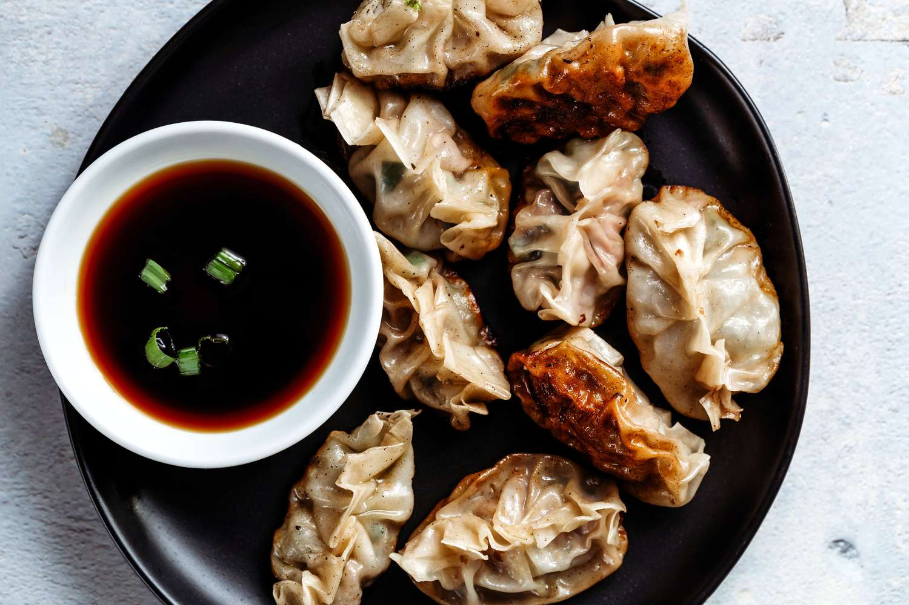

CHINESE DUMPLINGS

INGREDIENTS
- 1/2 lb ground pork
- 1 cup Napa cabbage, finely chopped
- 2 green onions, finely chopped
- 2 cloves garlic, minced
- 1 tbsp soy sauce
- 1 tbsp sesame oil
- 1 tbsp Shaoxing wine (or dry sherry)
- 1 tsp sugar
- 1/2 tsp salt
- 1/4 tsp black pepper
INSTRUCTIONS
- To make the dough, mix the flour and water together until a dough forms. Knead the dough on
a floured surface for 5-10 minutes until it becomes smooth and
elastic. Cover the dough with a damp cloth and let it rest for 30 minutes.
- To make the filling, combine the ground pork, Napa cabbage, green onions, garlic, soy sauce, sesame
oil, Shaoxing wine, sugar, salt, and black pepper in a large mixing bowl. Mix well until all ingredients are
evenly distributed.
- Roll out the dough on a floured surface to about 1/8 inch thickness. Use a round cookie cutter or a
drinking glass to cut the dough into circles.
- Place a small spoonful of the filling in the center of each circle. Fold the circle in half and pinch the
edges together to seal the dumpling.
- Repeat until all the dough and filling have been used up.
- To cook the dumplings, bring a pot of water to a boil. Add the dumplings to the pot and cook for 5-7 minutes, or until they float to the surface and the filling is cooked through.
- Serve the dumplings hot with soy sauce or your favorite dipping sauce.
- Enjoy your delicious Chinese dumplings!